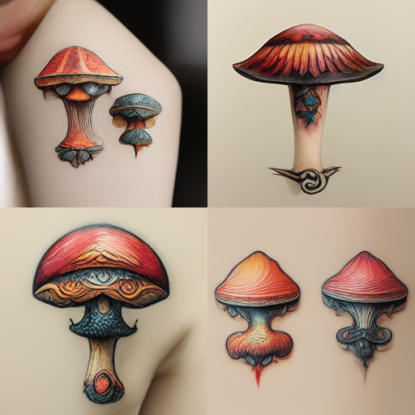

I'm Andrei Sitaev, a software developer in Sennder.
I've been experimenting with Machine Learning since 2019,
mostly with natural language processing.
But recently I tried AI image generation...
Dall-E
Stable Diffusion
Google Imagen
and what's it for?
You're tired and bored and wanna know, how would "realistic magic mushroom tattoos" look like?
It will take you about 10 minutes to get this:
or this for
Depression eating from the inside, Higly detailed, psycho, scary, 8K
or maybe you love Ryan Gosling so much :P
... but also think he lacks a bit of masculinity
Have I told you it would take 10 minutes to get this?
You might need even less! The steps you follow are:
Now join any of the #newbie-NN channels and let Midjourney imagine for you. Type this in one line:
/imagine prompt: attack ships on fire off the shoulder of Orion
and C–beams glitter in the darkness at Tannhauser Gate,
cinematic color grading, ultra realistic 8k:: cyberpunk::1
Not exactly what you've been looking for?
Now let me share a couple pieces of advice on using Midjourney
like a pro.
Let's look inside the tool >>>